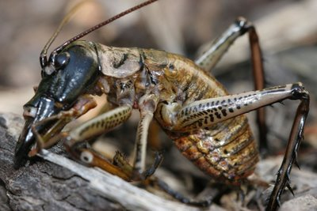

|  |
WetaMany weta are large by insect standards and some varieties of Weta are among the largest and heaviest in the world. Their physical appearance is like a a cricket, but the hind legs are enlarged and usually very spiny. All New Zealand Weta are wingless, and can be foundi n a variety of environments including alpine, forests, grasslands, caves, shrub lands and urban gardens. They are nocturnal, and some prey on other invertebrates, but the tree and giant Weta eat mostly lichens, leaves, flowers, seed-heads and fruit.The weta's lifestyle and habitat, where it may choose to remain concealed in suburban environments until unexpectedly confronted, combined with its notoriously unfriendly appearance, make it a frequent victim of irrational human aggression. Although the weta had native predators in the form of birds (especially the weka and kiwi), reptiles and bats before the arrival of humans, introduced species such as cats, hedgehogs, rats have caused a sharp decrease in their numbers. They are also vulnerable to habitat destruction caused by humans and modification of their habitat caused by introduced browsers(ie cattle). New Zealand’s Department of Conservation considers that 16 of the 70 species of weta are now at risk. Some examples of especially endangered species are even tracked by radio beacons. |